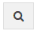

Dashboard
A situação dos dossiês é acompanhada pela opção do menu Dashboard.
Os dossiês podem apresentar as seguintes opções:
FINALIZADO CONFORME - O fluxo definido para o processo foi finalizado e a última etapa anterior a finalização foi uma avaliação de conformidade bem sucedida.
FINALIZADO - O fluxo definido para o processo foi finalizado e a última etapa anterior a finalização, não dependeu de nenhuma avaliação de conformidade.
PENDENTE DE INFORMAÇÃO - O dossiê foi avaliado pelo operador da área de conformidade que encontrou alguma pendência que precisa ser regularizada. Em regra, geralmente a operação retorna para a última unidade responsável pela alimentação do dossiê, porém isso pode variar conforme a definição de cada processo.
AGUARDANDO ALIMENTAÇÃO - O dossiê cumpriu uma determinada etapa do processo e no momento esta aguardando alimentação por alguma unidade para dar prosseguimento a fluxo. Esta situação indica que é necessária uma nova alimentação do dossiê devido a uma necessidade de nova informação ou documento, mas não se trata de uma pendência identificada na avaliação da área de conformidade.
AGUARDANDO TRATAMENTO - O dossiê encontra-se numa etapa do processo que esta aguardando a avaliação por algum operador da área de conformidade. Nesta situação os dossiês são capturados em regra seguindo sequência de atendimento em formato de fila (primeiro a chegar, primeiro a ser avaliado).
RASCUNHO - O dossiê foi criado de forma parcial, mas ainda não foi submetido para início das tratativas. Pode ser utilizado para criar a operação mesmo que ainda possui pendência de alguma informação ou documento obrigatório, mas nessa situação a operação ainda não foi iniciado e apenas a unidade do criador poderá manipula-lo.
Criado - representa o momento de criação do dossiê, ou seja, o momento de submissão com todos os elementos iniciais definidos pelo processo, preenchidos.
CANCELADO - O dossiê foi finalizado, mas por cancelamento. Essa ação só pode ser realizada pela unidade que inicializou o dossiê de produto ou por execução de comando administrativo.
Para regularizar pendências de dossiês que se encontram na situação Pendente de Informação, basta seguir os seguintes passos:
clicar na opção  , referente ao dossiê que deseja regularizar na lista;
clicar no botão Manipular, ir na aba Verificações;
A aba verificações apresentará os documentos que devem ser regularizados.